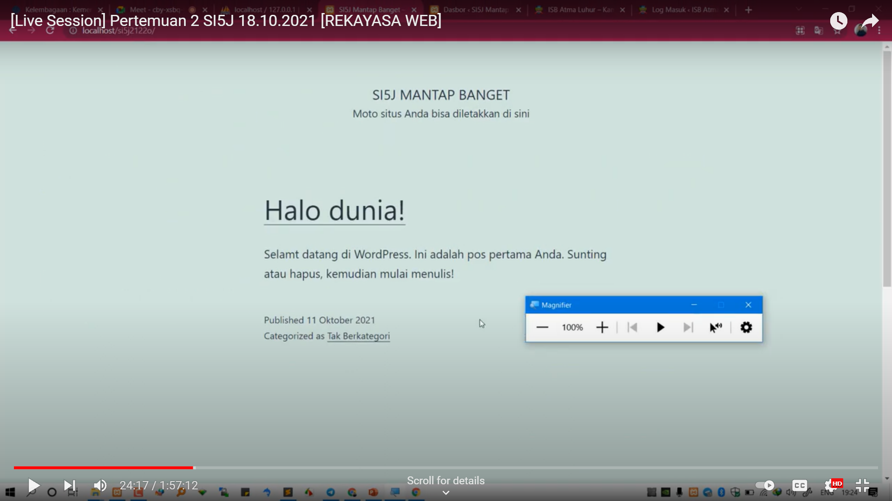
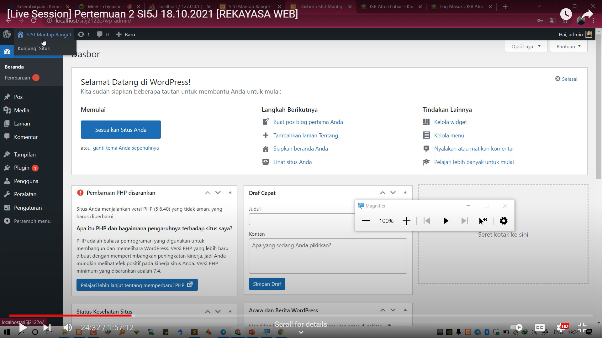

NIM: 1922500106
Nama: Salsabil Husna
Kelompok: SI5J
Pada pertemuan 2 tanggal 18 Oktober 2021, kesimpulan yang dapat saya ambil antara lain:
- cara mengimport database dan merestore aplikasi wordpress
- di dalam htdocs, mesti ada folder si5j2122o, sehingga pada browser bisa diakses dengan http://localhost/si5j2122o
- jika object not found (404), maka cek dulu nama folder antara htdocs dengan yang diketik di localhost
- jika ada tulisan error establishing database connection, cek dulu apakah mysql sudah running pada xampp control panel
- jika sudah running, buka wp-config.php pada folder si5j2122o menggunakan phpmyadmin dan pastikan MySql sudah running, dan cek db_name. db name ini pastikan ada di phpmyadmin menggunakan text editor kita
- jika pada phpmyadmin belum ada nama databasenya, maka import dulu file sql bahan pertemuan ke 2 (hasil pertemuan ke 1)
- wordpress memiliki 2 sisi, 1 tampilan backend (untuk admin/dashboard) dan 1 nya lagi tampilan front end (untuk pengunjung/client area)
- untuk backend, harus login dulu di alamat http://localhost/si5j2122o/wp-admin
- cara merubah daftar profil dan password, menyunting halaman web secara visual dan coding, menambah user baru tentang bagaimana peranan user, menghapus user
- cara membatasi penulis yang menyunting halaman web dengan perizinan admin
- cara menyunting setting meninggalkan komentar
Berikut tampilan front end halaman web:

Berikut tampilan back end halaman web:

Berikut tampilan halaman web jika not found:

Berikut tampilan halaman web jika database tidak bisa terkoneksi:

Berikut tampilan halaman web setelah di restore:

Berikut tampilan halaman web yang membedakan peranan user: